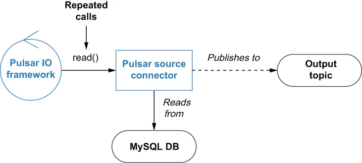

Pulsar IO source connectors are responsible for consuming data from external systems and publishing the data to the configured output topic. There are two distinct types of sources supported by the Pulsar IO framework; the first are those that operate on a pull-based model. As you can see in figure 5.3, the Pulsar IO framework repeatedly calls the Source connector’s read() method to pull data from the external source into Pulsar.
Pulsar IO 的 source 连接器负责从外部系统消费数据，并把这些数据发布到配置好的输出主题上。Pulsar IO 框架支持两种截然不同的 source；第一种是那些基于拉取（pull）模型运作的。正如你在图 5.3 中看到的，Pulsar IO 框架会反复调用 Source 连接器的 read() 方法，把数据从外部源端拉取进 Pulsar。

Figure 5.3 The Source connector’s read() method is repeatedly called, which then pulls the information from the database and publishes it to Pulsar.
图 5.3 Source 连接器的 read() 方法被反复调用，它从数据库中取出信息并发布到 Pulsar。
In this particular case, the logic inside the connector’s read() method would be responsible for querying the database, converting the result set into Pulsar messages, and publishing them to the output topic. This type of connector would be particularly useful when you have a legacy order entry application that only writes incoming orders into a MySQL database, and you want to expose these new orders to other systems for real-time processing and analysis.
在这个特定的例子中，连接器 read() 方法内部的逻辑将负责查询数据库、把结果集转换成 Pulsar 消息，并把它们发布到输出主题。当你有一个遗留的订单录入应用，它只把传入的订单写入一个 MySQL 数据库，而你希望把这些新订单暴露给其他系统做实时处理和分析时，这种类型的连接器就会特别有用。
The easiest way to create a pull-based source connector is to write a Java class that implements the org.apache.pulsar.io.core.Source interface, which is shown in listing 5.3. The first method defined in this interface is the open method, which is called just once when the source connector is created and should be used to initialize all the necessary resources, such as a database client.
创建一个基于拉取的 source 连接器最简单的方式，是编写一个实现了清单 5.3 中所示 org.apache.pulsar.io.core.Source 接口的 Java 类。该接口中定义的第一个方法是 open 方法，它在 source 连接器被创建时只被调用一次，应当被用于初始化所有必需的资源，例如一个数据库客户端。
The open method specifies an input parameter, named config of type Map, from which you can retrieve all the connector-specific settings, such as the database connection URL, username, and password. This input parameter contains all of the values specified in the file specified by the —source-config-file parameter along with all the default configuration settings and values provided by the various switches used to create or update a function.
open 方法指定了一个名为 config、类型为 Map 的输入参数，你可以从中取出所有连接器专属的设置，例如数据库连接 URL、用户名和密码。这个输入参数既包含 —source-config-file 参数所指定文件中的全部取值，也包含用于创建或更新一个函数的各个开关所提供的全部默认配置设置与取值。
Listing 5.3 The Pulsar source interface
package org.apache.pulsar.io.core;
public interface Source<T> extends AutoCloseable {
/**
* Open source with configuration
*
* @param config initialization config
* @param sourceContext
* @throws Exception IO type exceptions when opening a connector
*/
void open(final Map<String, Object> config,
SourceContext sourceContext) throws Exception;
/**
* Reads the next message from source.
* If source does not have any new messages, this call should block.
* @return next message from source. The result should never be null
* @throws Exception
*/
Record<T> read() throws Exception;
}
In addition to the config parameter, the Pulsar runtime also provides a SourceContext for the connector. Much like the context object defined in the Pulsar Function API, the SourceContext object provides access to runtime resources for tasks like collecting metrics, retrieving stateful property values, and more.
除了 config 参数之外，Pulsar 运行时还会为该连接器提供一个 SourceContext。与 Pulsar Function API 中所定义的那个 context 对象非常相似，SourceContext 对象提供对运行时资源的访问，用于诸如采集指标、取回有状态属性值等任务。
The other method defined in the interface is the read method, which is responsible for retrieving data from the external source system and publishing it to the target Pulsar topic. The implementation of this method should be blocking on this method if there is no data to return and should never return null. The read() method returns an object that implements the org.apache.pulsar.functions.api.Record interface that we saw earlier in listing 5.2. It is worth pointing out that the source interface also extends the AutoCloseable interface that includes a close method definition, which should be used to release any resources, such as database connections, before the connector is stopped
该接口中定义的另一个方法是 read 方法，它负责从外部源系统取回数据，并把它们发布到目标的 Pulsar 主题上。当没有数据可返回时，该方法的实现应当阻塞，并且绝不应返回 null。read() 方法返回一个实现了 org.apache.pulsar.functions.api.Record 接口的对象，也就是我们在前面的清单 5.2 中看到的那个接口。值得指出的是，source 接口同样继承了 AutoCloseable 接口，后者包含一个 close 方法定义，应当被用于在该连接器被停止之前释放任何资源，例如数据库连接。